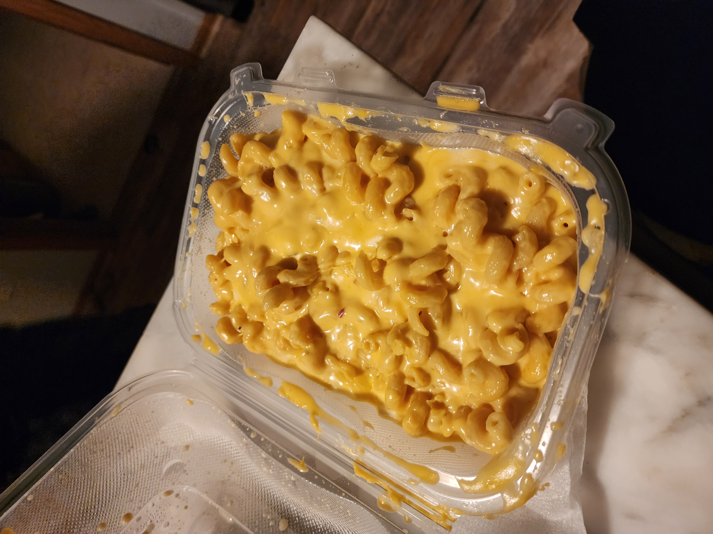

Dirty Dozen Mac and Cheese

An absolute cluster fuck of TWELVE different cheeses
mixed together in a moist, gooey, cacophony
of constipation. Eat while it's warm, before
it becomes suitable for house construction.
Ingredients
- 1 cup of macaroni
- half a cup of milk
- 1 fluid oz of gouda
- 1 fluid oz of goat cheese crumbles
- 1 fluid oz of White Cheddar shredded
- 1 fluid oz of blue cheese crumbles
- 1 fluid oz of shredded parmesean
- 1 fluid oz of shredded provolone
- 1 fluid oz of mozzarella chunks
- 1 slice of american
- 1 slice of pepper jack
- 1 slice of swiss
- 1 slice of smoked cheddar
- 1 fluid oz of cheese sauce
Steps
- Add pasta to boiling water to soften
- Put milk and cheese sauce in pan
- Add all other cheeses, stirring as they are added
- Once all cheese is added, remove pasta from water and mix with cheese
- Add more milk to thin if desired
Congratulations, you have created a bioweapon against the lactose-intolerant